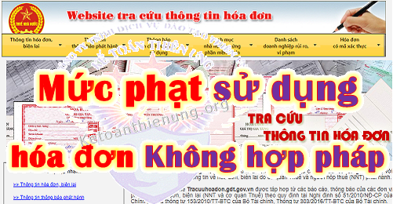

Quy định về mức phạt sử dụng không hợp pháp hóa đơn - Mức phạt sử dụng hóa đơn không hợp pháp; Hành vi sử dụng hóa đơn không hợp pháp, sử dụng không hợp pháp hóa đơn là như thế nào? Kế toán Diệu Tâm xin trích các văn bản quy định để giúp đỡ các bạn:
I. Mức phạt sử dụng không hợp pháp hóa đơn, sử dụng hóa đơn không hợp pháp:
Theo điều 28 Nghị định 125/2020/NĐ-CP quy định Xử phạt đối với hành vi sử dụng hóa đơn không hợp pháp, sử dụng không hợp pháp hóa đơn, cụ thể như sau:
1. Phạt tiền từ 20.000.000 đồng đến 50.000.000 đồng đối với hành vi sử dụng hóa đơn không hợp pháp, sử dụng không hợp pháp hóa đơn quy định tại Điều 4 Nghị định này, trừ trường hợp được quy định tại điểm đ khoản 1 Điều 16 và điểm d khoản 1 Điều 17 Nghị định này.
2. Biện pháp khắc phục hậu quả: Buộc hủy hóa đơn đã sử dụng.
----------------------------------------------------------------
Trường hợp tại điểm đ khoản 1 Điều 16 và điểm d khoản 1 Điều 17 Nghị định 125 quy định như sau:
Điều 16. Xử phạt hành vi khai sai dẫn đến thiếu số tiền thuế phải nộp hoặc tăng số tiền thuế được miễn, giảm, hoàn
1. Phạt 20% số tiền thuế khai thiếu hoặc số tiền thuế đã được miễn, giảm, hoàn cao hơn so với quy định đối với một trong các hành vi sau đây:
đ) Sử dụng hóa đơn, chứng từ không hợp pháp để hạch toán giá trị hàng hóa, dịch vụ mua vào làm giảm số tiền thuế phải nộp hoặc làm tăng số tiền thuế được hoàn, số tiền thuế được miễn, giảm nhưng khi cơ quan thuế thanh tra, kiểm tra phát hiện, người mua chứng minh được lỗi vi phạm sử dụng hóa đơn, chứng từ không hợp pháp thuộc về bên bán hàng và người mua đã hạch toán kế toán đầy đủ theo quy định.
Điều 17. Xử phạt hành vi trốn thuế
1. Phạt tiền 1 lần số thuế trốn đối với người nộp thuế có từ một tình tiết giảm nhẹ trở lên khi thực hiện một trong các hành vi vi phạm sau đây:
d) Sử dụng hóa đơn không hợp pháp; sử dụng không hợp pháp hóa đơn để khai thuế làm giảm số thuế phải nộp hoặc tăng số tiền thuế được hoàn, số tiền thuế được miễn, giảm;
2. Phạt tiền 1,5 lần số tiền thuế trốn đối với người nộp thuế thực hiện một trong các hành vi quy định tại khoản 1 Điều này mà không có tình tiết tăng nặng, giảm nhẹ.
3. Phạt tiền 2 lần số thuế trốn đối với người nộp thuế thực hiện một trong các hành vi quy định tại khoản 1 Điều này mà có một tình tiết tăng nặng.
4. Phạt tiền 2,5 lần số tiền thuế trốn đối với người nộp thuế thực hiện một trong các hành vi quy định tại khoản 1 Điều này có hai tình tiết tăng nặng.
5. Phạt tiền 3 lần số tiền thuế trốn đối với người nộp thuế thực hiện một trong các hành vi quy định tại khoản 1 Điều này có từ ba tình tiết tăng nặng trở lên
Xem thêm: Mức phạt tội trốn thuế.
----------------------------------------------------------------------------
II. Hành vi sử dụng hóa đơn không hợp pháp, sử dụng không hợp pháp hóa đơn:
Theo Điều 4 Nghị định 125/2020/NĐ-CP quy định Hành vi sử dụng hóa đơn không hợp pháp; sử dụng không hợp pháp hóa đơn, cụ thể như sau:
1. Sử dụng hóa đơn, chứng từ trong các trường hợp sau đây là hành vi sử dụng hóa đơn không hợp pháp:
a) Hóa đơn, chứng từ giả;
b) Hóa đơn, chứng từ chưa có giá trị sử dụng, hết giá trị sử dụng;
c) Hóa đơn bị ngừng sử dụng trong thời gian bị cưỡng chế bằng biện pháp ngừng sử dụng hóa đơn, trừ trường hợp được phép sử dụng theo thông báo của cơ quan thuế;
d) Hóa đơn điện tử không đăng ký sử dụng với cơ quan thuế;
đ) Hóa đơn điện tử chưa có mã của cơ quan thuế đối với trường hợp sử dụng hóa đơn điện tử có mã của cơ quan thuế;
e) Hóa đơn mua hàng hóa, dịch vụ có ngày lập trên hóa đơn từ ngày cơ quan thuế xác định bên bán không hoạt động tại địa chỉ kinh doanh đã đăng ký với cơ quan nhà nước có thẩm quyền;
g) Hóa đơn, chứng từ mua hàng hóa, dịch vụ có ngày lập trên hóa đơn, chứng từ trước ngày xác định bên lập hóa đơn, chứng từ không hoạt động tại địa chỉ kinh doanh đã đăng ký với cơ quan nhà nước có thẩm quyền hoặc chưa có thông báo của cơ quan thuế về việc bên lập hóa đơn, chứng từ không hoạt động tại địa chỉ kinh doanh đã đăng ký với cơ quan có thẩm quyền nhưng cơ quan thuế hoặc cơ quan công an hoặc các cơ quan chức năng khác đã có kết luận đó là hóa đơn, chứng từ không hợp pháp.
2. Sử dụng hóa đơn, chứng từ trong các trường hợp sau đây là hành vi sử dụng không hợp pháp hóa đơn, chứng từ:
a) Hóa đơn, chứng từ không ghi đầy đủ các nội dung bắt buộc theo quy định; hóa đơn tẩy xóa, sửa chữa không đúng quy định;
b) Hóa đơn, chứng từ khống (hóa đơn, chứng từ đã ghi các chỉ tiêu, nội dung nghiệp vụ kinh tế nhưng việc mua bán hàng hóa, dịch vụ không có thật một phần hoặc toàn bộ); hóa đơn phản ánh không đúng giá trị thực tế phát sinh hoặc lập hóa đơn khống, lập hóa đơn giả;
c) Hóa đơn có sự chênh lệch về giá trị hàng hóa, dịch vụ hoặc sai lệch các tiêu thức bắt buộc giữa các liên của hóa đơn;
d) Hóa đơn để quay vòng khi vận chuyển hàng hóa trong khâu lưu thông hoặc dùng hóa đơn của hàng hóa, dịch vụ này để chứng minh cho hàng hóa, dịch vụ khác;
đ) Hóa đơn, chứng từ của tổ chức, cá nhân khác (trừ hóa đơn của cơ quan thuế và trường hợp được ủy nhiệm lập hóa đơn) để hợp thức hóa hàng hóa, dịch vụ mua vào hoặc hàng hóa, dịch vụ bán ra;
e) Hóa đơn, chứng từ mà cơ quan thuế hoặc cơ quan công an hoặc các cơ quan chức năng khác đã kết luận là sử dụng không hợp pháp hóa đơn, chứng từ.
---------------------------------------------------------------
Như vậy:
- Nếu Doanh nghiệp, tổ chức có hành vi sử dụng hóa đơn không hợp pháp; sử dụng không hợp pháp hóa đơn theo quy định trên (tức là trường hợp theo điều 4 Nghị định 125) => THì bị xử phạt từ 20tr - 50tr (mức trung bình sẽ là 35tr).
- Nếu sử dụng hóa đơn không hợp pháp để hạch toán giá trị hàng hóa, dịch vụ mua vào làm giảm số tiền thuế phải nộp hoặc làm tăng số tiền thuế được hoàn, số tiền thuế được miễn, giảm nhưng khi cơ quan thuế thanh tra, kiểm tra phát hiện, người mua chứng minh được lỗi vi phạm sử dụng hóa đơn, chứng từ không hợp pháp thuộc về bên bán hàng và người mua đã hạch toán kế toán đầy đủ theo quy định => Thì bị phạt 20% số tiền thuế khai thiếu hoặc số tiền thuế đã được miễn, giảm, hoàn cao hơn so với quy định.
- Nếu sử dụng hóa đơn không hợp pháp; sử dụng không hợp pháp hóa đơn để khai thuế làm giảm số thuế phải nộp hoặc tăng số tiền thuế được hoàn, số tiền thuế được miễn, giảm => Thì bị phạt hành vi trốn thuế. (Phạt từ 1 đến 3 lần số tiền thuế trốn)
Xem thêm: Cách xử lý hóa đơn không hợp pháp.
---------------------------------------------------------------------
Kế toán Diệu Tâm chúc các bạn làm tốt công việc kế toán
Các bạn muốn học cách kê khai thuế hàng tháng, quý; Cách xử lý hóa đơn; Cách xác định các khoản chi phí được trừ - không được trừ; Cách lập tờ khai quyết toán thuế TNCN, TNDN cuối năm ... Có thể tham gia Khóa học thực hành kế toán thuế chuyên sâu trên chứng từ thực tế.
-------------------------------------------------------------------------
